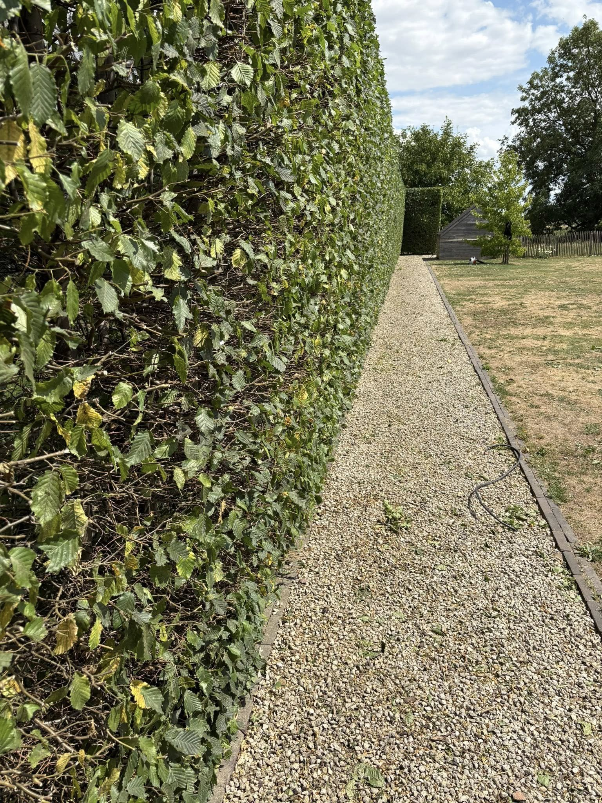
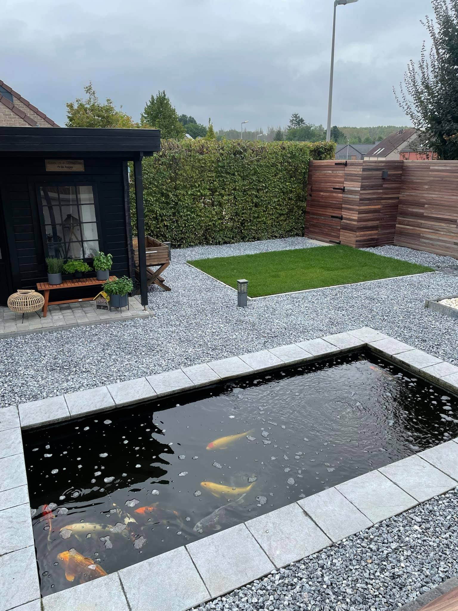
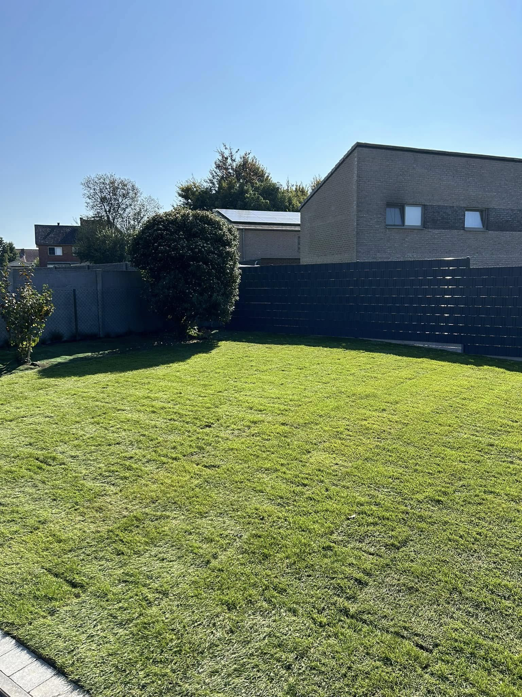
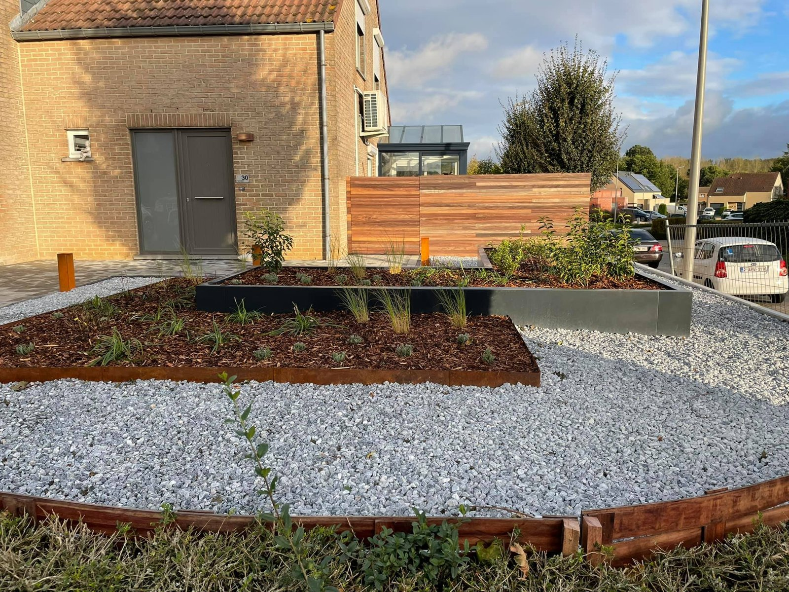
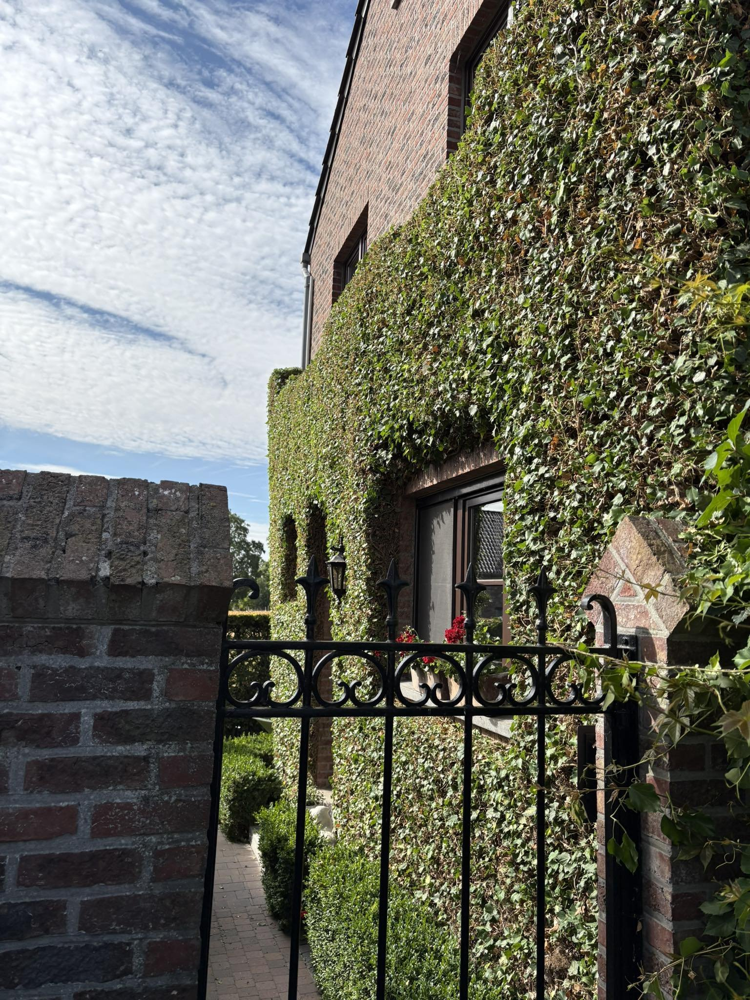
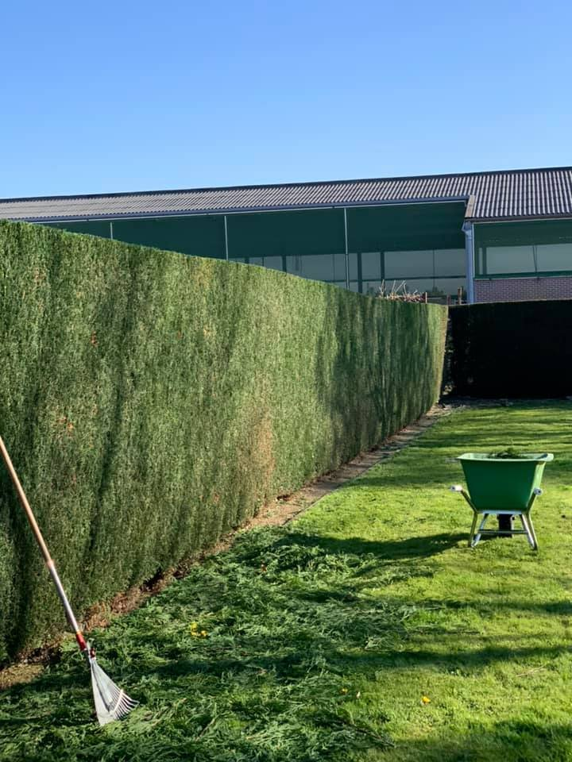

Snoeiwerken
Hagen, struiken en bomen, strak en gezond.
Aanleg, onderhoud en snoeiwerk door één vakman die uw tuin kent. Netjes afgewerkt, het hele jaar door.


Hagen, struiken en bomen, strak en gezond.

Aanleg, herstel en maaien.

Borders die elk seizoen kleur geven.

Vaste rondes, zodat het altijd netjes ligt.
“Mijn doel is simpel: van uw tuin een plek maken waar u elke dag van kan genieten.”Andrija StasOprichter, Tuinwerken Stas
